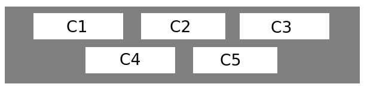
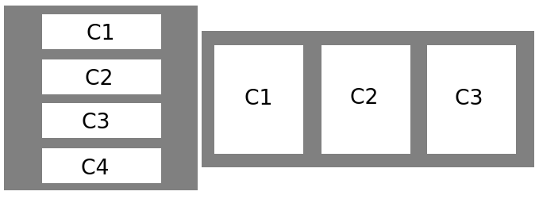
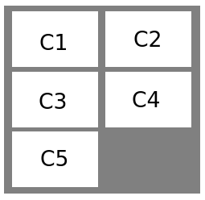
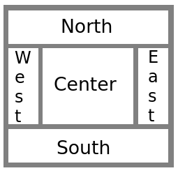
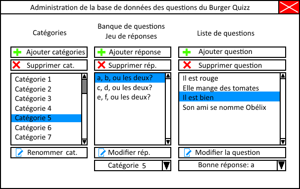
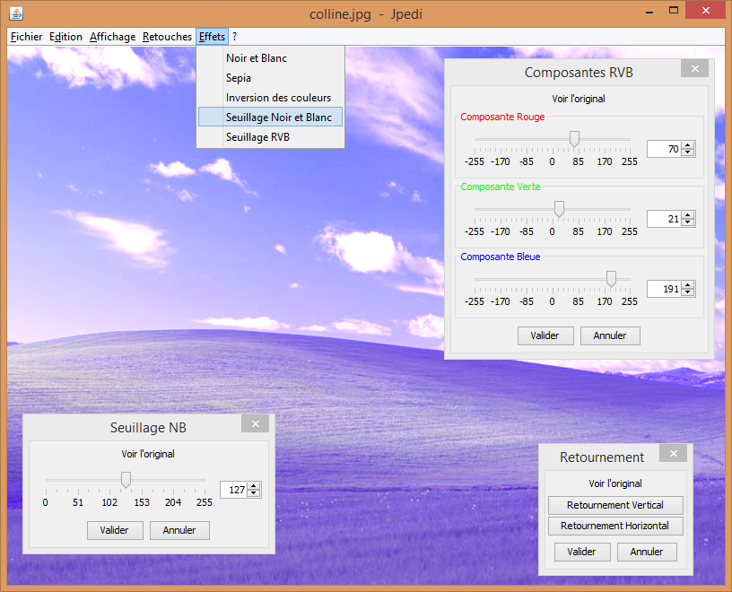

Les IHMs en Java
Qui suis-je ?
Joseph Caillet
- Etudiant CIR3 à l'isen Brest
- Ancien stagiaire chez Cozy Cloud
Plan du cours
- Généralités
- Le positionnement d'éléments
- Les événements
- Quelques composants en vrac
- Bonus : conseils divers
Ce cours est conçu comme une initiation aux interfaces graphiques en Java, et ne prétend pas à l'exhaustivité. Il a pour but de présenter les technique de bases, et de vous permetre d'orienter vos recherches futures dans ce domaine.
Généralités
Les différentes technologies fournies avec java pour la conception d'interfaces :
- AWT (Abstract Window Toolkit)
- Swing (lié à AWT)
- JavaFX (récent, sorti avec le jdk 8)
Lors de ce cours nous utiliserons Swing.
Le positionnement d'éléments
Les différents type d'objets
- Les conteneurs (JFrame, JPanel, ...)
- Les contenus (JLabel, JButton, ..., et JPanel?)
Remarque : le JPanel fait parti des deux familles, nous verrons pourquoi...
Les conteneurs de base
La JFrame, conteneur principal de votre application
La JFrame posséde un seul emplacement pour accueillir d'autres composants: le ContentPane.
//Pratique très courante : hériter de JFrame pour créer sa fenêtre.
public class Fenetre extends JFrame{
public fenêtre(){
setTitle("Titre");
setDefaultCloseOperation(JFrame.EXIT_ON_CLOSE);
getContentPane()//Récupérer le content pane
setContentPane(un conteneur ici)//Remplacer le content pane
setVisible(true);
}
}
Les conteneurs de base
Le JPanel, conteneur de base par exellence.
Le Jpanel est un conteneur basique.
public class Fenetre extends JFrame{
public Fenetre(){
JPanel panneau = new JPanel();
//Methode 1
panneau.setBackground(Color.RED);
setContentPane(panneau);
//Methode 2
//ici, le ContentPane se comporte comme un JPanel
getContentPane().setBackground(Color.RED);
setVisible(true);
}
}
NB : à partir de maintenant, les exemples de codes sont considérés comme étant insérés dans le code d'une classe héritant de JFrame. L'objet courant this sera la plupart du temps la classe héritée en question.
Organisation des composants
Les Layout Managers
Pour ajouter un composant dans un conteneur (comme un JPanel), on a besoin de trois éléments :
- Un conteneur
- Un/Des éléments contenus (les composants)
- Un objet d'agencement (un layout manager)
conteneur.setLayout(objAgencement);
conteneur.add(contenu1);
conteneur.add(contenu2);
Le comportement de la methode add() et ses arguments seront différents suivant l'objet d'agencement choisi.
FlowLayout
Dispose les composants les uns à la suite des autres. Passe à la ligne si besoin. Layout par défaut des JPanel.

JPanel panneau = new JPanel();
FlowLayout fl = new FlowLayout(FlowLayout.CENTER);
panneau.setLayout(fl);
panneau.add(composant1);
panneau.add(composant2);
...
panneau.add(composant5);
BoxLayout
Dispose les composants les uns à la suite des autres, en collones ou en ligne.

JPanel panneau = new JPanel();
panneau.setLayout(new BoxLayout(panneau, BoxLayout.PAGE_AXIS));
panneau.add(composant1);
Box boite = Box.createVerticalBox()
boite.add(composant1)
GridLayout
Dispose les composants les uns à la suite des autres, dans une grille.

JPanel panneau = new JPanel();
panneau.setLayout(new GridLayout(3, 2));
panneau.add(composant1);
panneau.add(composant2);
...
panneau.add(composant5);
BorderLayout
Dispose les composants aux points cardinaux.

JPanel panneau = new JPanel();
panneau.setLayout(new BorderLayout());
panneau.add(composantNord, BorderLayout.NORTH);
panneau.add(composantOuest, BorderLayout.WEST);
panneau.add(composantCentre, BorderLayout.CENTER);
Ils en existe encore d'autres...
Voir les différents layouts existantsPlacer les composant dans la fenêtre
Rappel : votre JFrame posséde un seul et unique ContentPane.
//Méthode 1 :
//remplacer le ContentPane par un JPanel mis en page
JPanel panneau = new JPannel();
panneau.setLayout(...);
panneau.add(...);
setContentPane(panneau);
//Méthode 2a :
//accéder au ContentPane directement
getContentPane().setLayout(...)
getContentPane().add(...)
//Méthode 2b :
//utiliser les méthodes redéfinnies par la classe JFrame :
setLayout(...)
add(...)
Mise en page élaborée
Les possibillitées des layouts sont limitées, mais...
Le retour du JPanel
Tous conteneur est potentiellement un contenu. En effet, il est possible d'inclure des conteneurs dans un conteneur !
JPanel conteneur = new JPannel();
JPanel contenu1 = new JPannel();
JPanel contenu2 = new JPannel();
conteneur.add(contenu1);
conteneur.add(contenu2);
setContentPane(conteneur)
TP1 : Afficher un drapeau
Créer une fenêtre, y afficher un drapeau simple avec des JPanel de couleurs différentes.
TP1 : Afficher un drapeau
public Fenetre extends JFrame{
public Fenetre(){
super("TP1 : Drapeau");
JPanel bleu = new JPannel();
JPanel blanc = new JPannel();
JPanel rouge = new JPannel();
bleu.setBackground(Color.BLUE);
blanc.setBackground(Color.BLUE);
rouge.setBackground(Color.RED);
setLayout(new GridLayout(1, 3));
add(bleu);
add(blanc);
add(rouge);
setDefaultCloseOperation(JFrame.EXIT_ON_CLOSE);
setVisible(true);
}
public static void main(String[] args){
Fenetre f = new Fenetre();
}
}
Les Composants contenus et les événements
Il existe deux façons d'intéragir avec un composant :
- Le composant nous avertit lorsqu'il change d'état
- On vérifie l'état du composant "à la main"
Ex : la barre de recherche google :
- Autocomplétion lors de la frappe (changement d'état)
- Récupération contenu et lancement recherche lors du clic sur le bouton ad hoc (récupération à la main)
Vérification à la main
Pas de méthode générale : il faut aller lire la doc du composant pour savoir ce qu'on peut récuperer. Rechercher en particulier les méthodes de type getXXX() et isXXX().
Exemple : le composant JCheckBox, une case à cocher, posséde une méthode isSelected() retournant un booléen.
Le composant nous avertit
Principe des événements : le composant va "avertir" un objet lorsque son état va changer. Pour cela, il faut deux choses :
- Un composant "écoutable" (nous prendrons un JButton)
- Un objet "écouteur" (des objet de type XXXListener)
Pour connaitre le type du/des "écouteur(s)" acceptés par un composant, rechercher dans la doc du composant les méthode de type addXXXListener().
Créer un Listener et le lier à notre bouton
4 méthodes
- La classe anonyme
- Un objet à part
- La fenêtre elle même
- La classe interne
La classe anonyme
JButton btn = new JButton("Clic");
btn.addActionListener(new ActionListener() {
public void actionPerformed(ActionEvent actionEvent) {
System.out.println("Bouton cliqué !");
}
});
Un objet à part
public class RessourcesLoader implements ActionListener{
public void actionPerformed(ActionEvent e){
loadRessources();
}
public void loadRessources(){
System.out.println("Loading datas...");
}
}
JButton btn = new JButton("Clic");
RessourcesLoader rl = new RessourcesLoader();
btn.addActionListener(rl);
La fenêtre elle même
public class fenêtre extends JFrame implements ActionListener{
private JButton btn1 = new JButton("Texte premier bouton");
private JButton btn2 = new JButton("Bouton num deux.");
btn1.addActionListener(this);
btn2.addActionListener(this);
public void actionPerformed(ActionEvent e){
JButton btn = (JButton) e.getSource();
System.out.println(btn.getText());
}
}
La classe interne
public fenêtre extends JFrame{
private JButton btn1 = new JButton("btn1");
private JButton btn2 = new JButton("btn2");
btn1.addActionListener(new LecteurTexteBouton());
btn2.addActionListener(new LecteurTexteBouton());
class LecteurTexteBouton implements ActionListener{
public void actionPerformed(ActionEvent e){
if(e.getSource() == btn1){
System.out.println("btn1 clic")
} else if(e.getSource() == btn2){
System.out.println("btn2 clic")
}
}
}
}
Présentation rapide de composants
composants de type formulaire
- JComboBox : Liste déroulante
- JCheckBox : Case à cocher
- JRadioButton : Bouton radio
- JTextField : Champ texte
- JList : Selection d'éléments dans une liste
- JFormattedTextField : Champ texte formatté
- JPasswordField : Champ mot de passe
Boites de dialogues
Basique : JOptionPane
Evoluée : hériter de JDialog
Menus et barre d'outils
- JMenuBar, JMenu, JMenuItem
- JToolBar
Autres composants
- JSplitPane : deux composants avec un slider
- JScrollPane : barres de défilement si débordement
- JTextArea : grande zone de texte
- JTabbedPane : conteneur à onglets
- JSlider : curseur
- JSpinner : champ pour un entier borné (ou pas)
- JProgressBar : barre de progression
- BorderFactory : création de bordure
Bonus : conseil divers
Faire une/des maquette(s) COMPLETE(S)
Viser la simplicité !
Faire une/des maquette(s) COMPLETE
Suivre la maquette pour la réalisation
Mettre en place le Look and Fell du système
try
{
UIManager.setLookAndFeel(UIManager.getSystemLookAndFeelClassName());
}
catch (ClassNotFoundException e) {}
catch (InstantiationException e) {}
catch (IllegalAccessException e) {}
catch (UnsupportedLookAndFeelException e) {}
Taille minimale
this.pack();
this.setMinimumSize(
new Dimension(this.getWidth(), this.getHeight())
);
Décomposer son code
Divisez votre IHM en zones à construire, et créez une méthode pour la construction de chaques zones. Ne pas tout mettre dans le constructeur !
Ne pas hésiter à mettre les initialisations barbantes lors de la déclaration des attributs, et à utiliser des variables locales pour la création de votre IHM
Bien nommer vos variables
Dans une IHM à beaucoup de composants, cela aide grandement !
coller à la philosophie MVC
Essayez de séparer le plus possible les composants M, V et C.
Pour le modèle, aller voir le design pattern DAO, bon complément du design pattern MVC.
Pratiquez, lancez vous dans des projets persos !
RTFM
La Javadoc est votre amie !
Fin du cours
Merci de votre attention :)